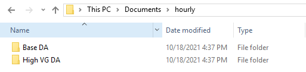
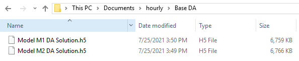
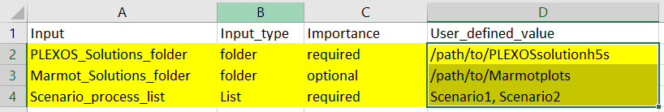
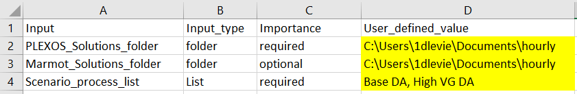
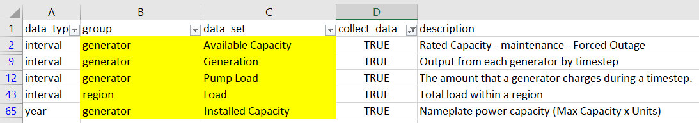
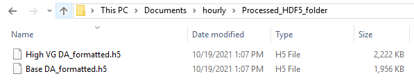

Tutorial: Formatting PLEXOS modelling results¶
This is an introductory tutorial on formatting PLEXOS modelling results with Marmot. It assumes your are familiar with the PLEXOS production cost modelling software. By the end of this tutorial you will have completed the following:
Set up your input data folders.
Set up the user input files required for formatting.
Run the formatter and created Marmot formatted h5 files.
Before you do anything else, make sure you have installed Marmot and its prerequisites correctly by following the Install the Marmot software instructions.
Your input data and how to organize it¶
For this tutorial we will use example data located in the Marmot/example-data folder. This folder contains two sets of example data, 5 minute and hourly. We will work with the hourly data.
Copy the hourly folder to a directory of your choosing. Once you open the hourly data folder you will see the following sub-folders:
Base DA and High VG DA contain data that are grouped together under the same scenario. The name of the folder is the scenario name and is an important identifier in Marmot. Depending on how a user has setup their PLEXOS model, this folder should contain 1 or more files that are temporally disaggregated.
These scenario folders contain two files each, broken into monthly data sets. The files are h5 files and are what the Marmot formatter expects as an input. See h5plexos for an explanation on how these files are created.
Setting up the input files¶
To let Marmot know where our data is stored and which properties we would like to process, we need to setup our input files.
Marmot_user_defined_input¶
The first file you should setup is the Marmot_user_defined_inputs: csv file. This file is located in the Marmot/marmot directory. If you open the file in a spreadsheet programme such as MS Excel you will see the following structure:

The file has 4 columns, with column D used for adjusting input. For this tutorial we will focus on the following rows, for a more comprehensive look at this file see our How-to Guides and Input File References sections
The first two rows define where our input files are saved and where to save our outputs. The PLEXOS_Solutions_folder should point to the root of our scenario name folders described above. For our data this is the hourly folder we setup earlier.
The Marmot_Solutions_folder allows you to save the outputs from the formatter and plotter in a different location to the input files. For this tutorial we will save our outputs in the same location as our inputs.
Scenario_process_list identifies the scenarios we want to process with the formatter. This would correspond to the scenario name folders within the the hourly folder, Base DA and High VG DA. Multiple scenarios should be comma separated.
Setup the 3 rows using your inputs, they should look something like this when you’re finished:
plexos_properties¶
Next we will setup the plexos_properties: csv file. This file is also located in the Marmot/marmot directory. This file specifies which properties we want to processes with Marmot.
Note
For Marmot to process a property it must have been included in your PLEXOS report output.
When you open the file you will see the following structure:

The file has 5 columns, columns B and C specify the type of property to process. Column D accepts TRUE/FALSE values used to determine whether Marmot should process the specified property. For a more comprehensive look at this file see our How-to Guides and Input File References sections
Set all the values in column D to False except the following:
generator Available Capacity
generator Generation
generator Pump Load
generator Installed Capacity
region Load
Marmot will now know to process these properties.
Running the formatter¶
With the input files setup, we are now ready to process our selected properties.
Open a terminal that is setup with Python and conda such as Anaconda prompt and change directory
to the Marmot\marmot repository folder using the cd command like the following example:
cd E:\Marmot\marmot
Next activate the marmot-env:
conda activate marmot-env
Finally initiate the formatter using the following command:
python .\marmot_h5_formatter.py
Marmot will now begin formatting your properties and will print messages to the terminal. Once completed the formatted outputs will be located in a new folder called Processed_HDF5_folder within the hourly data folder. When you open this folder you will see the following h5 files:
Congratulations, you have successfully formatted PLEXOS results with Marmot and are now ready to plot.